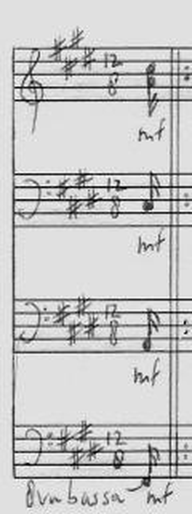
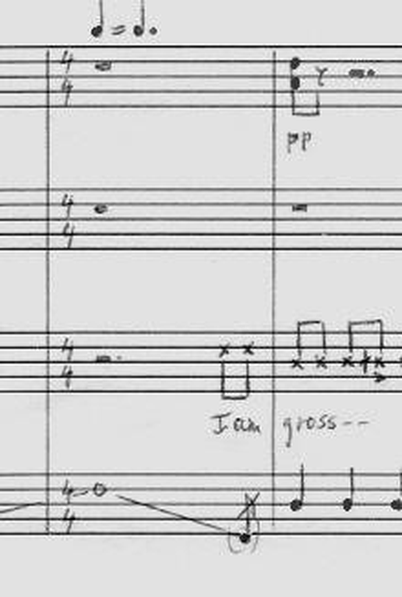
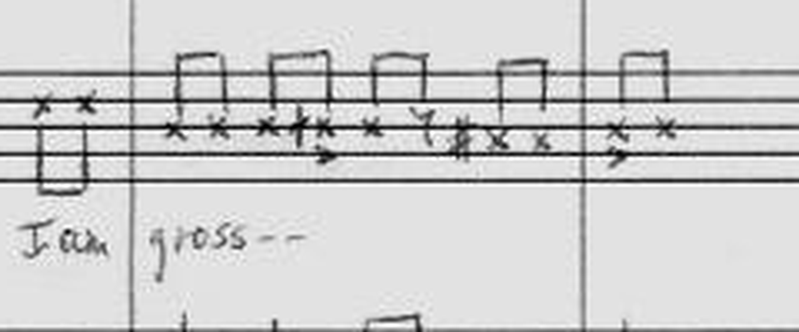
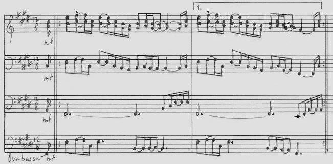
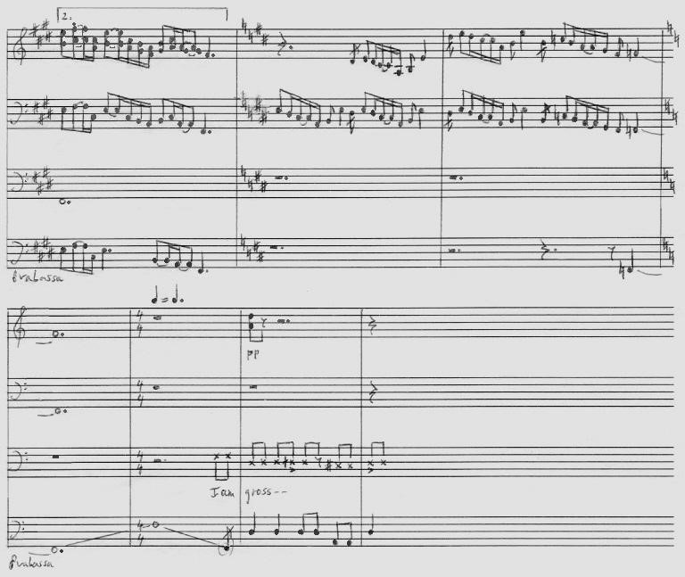
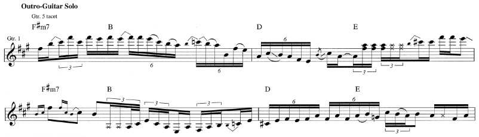

Drum part by Ralph Humphrey. Transcription state measured against the four published Songsterr tabs, the Kasper Sloots handwritten score, and a fifteen stem Moises Pro separation at 96 kHz. The clock on this page was measured from the separation's own metronome track.
Three premises in the brief did not survive contact with the disk.
96 kHz, 24 bit, 213.752 s. Six piece drum split plus a metronome track. Found only after Brandon asked whether the shared folder had been checked.
s642618 by David-129 holds 229 favorites against 55, 9 and 1 for the others. It was exported and is now the base for the editing copy.
Kasper Sloots wrote a four staff score of the opening with a percussion staff at the verse entry. It covers the first pages of the song.
Beats per minute across 77 bars, drifting between 81.1 and 94.5. Every tab ships a 120 then 90 map instead, which is a generator default.
The first version of this page reported the stems unreachable, on the strength of a volume list showing only Macintosh HD. That search covered Projects, Music, the Desktop anchors and the external drives. It never touched /Users/Shared, which is where a complete fifteen stem Moises Pro separation of this song was sitting the whole time. Two other Zappa songs, Keep It Greasey and Watermelon In Easter Hay, keep their stems in the same folder. Search that path first on any Zappa audio question.
One published claim is also withdrawn. The first pass called the solo entry a fourteen second failure, comparing a tab clock reading of 2:28 against the Sloots timestamp of 2:42. The lead stem puts the solo entry at 2:33, in audio bar 56. The Sloots 2:42 is a clip start inside the solo rather than its first bar, so the real gap is five seconds and the overstatement was mine.
The brief treats I'm The Slime as a ghost note repair with good stems, our own Guitar Pro, and human transcriptions in hand. The song is not in the 34 id program register, holds no pre-sweep baseline on disk, and has no restore in the moderation queue. It was never touched by the ghost sweep. This is a new transcription from a blank start, and the ghost note repair workflow does not apply to it.
| Source class | Status | Where it is, or why it is not |
|---|---|---|
| Dedicated Moises Pro stems | 15 stems | /Users/Shared/Frank Zappa - 02 - I’m the Slime-F# minor-87bpm-443hz/ — kick, snare, toms, hat, cymbals, other_kit, bass, lead, rhythm, piano, wind, other, vocals, backing_vocals, metronome. 96 kHz, 24 bit, 213.752 s each. |
| Our own Guitar Pro file | built now | None existed. The donor was exported from s642618 and rebuilt with the measured tempo map at _outputs/zappa-slime-transcription/gp/. |
| Songsterr tabs | 4 pulled | All four saved to _outputs/zappa-slime-transcription/tabs/ with full track JSON for every instrument. |
| Kasper Sloots score | opening only | Three scans plus prose at _outputs/zappa-drum-sources/08-analysis/zappa-analysis/. Percussion staff visible at the meter change. |
| Paul Pappas, Hal Leonard 2011 | not held | Sloots records that Pappas transcribed the song in full for the Hal Leonard guitar songbook series. That book is copyrighted and is not on this Mac. |
| Our Over-Nite Sensation band book | not evidence | drwu-overflow/bandbooks-library/zappa-overnite.pdf, pages 9 to 12. Its section map lists round timestamps at thirty second spacing, which is template filler. Its key and tempo claim conflicts with Sloots on the opening. |
| Program register entry | absent | I'm The Slime is not among the 34 song ids on the Zappa program scope page. |
Authorship was read from the Songsterr meta endpoint on 2026-09-07.
| Song id | Title | Author | Made via | Created | Views | Bars | Drum notes |
|---|---|---|---|---|---|---|---|
| s642618 | I'm The Slime Frank Zappa | David-129 | Editor | 2026-08-02 | 7,768 | 80 | 1354 |
| s4663113 | I'm The Slime 1 Frank Zappa | nick3388 | AI | 2026-04-04 | 46 | 81 | 1532 |
| s2826582 | I'm The Slime Frank Zappa, The Mothers Of Invention | Aaron-Albrecht | AI | 2025-11-06 | 963 | 81 | 1510 |
| s6070985 | I'm The Slime Frank Zappa, The Mothers | Joshua-Rendall | AI | 2026-07-16 | 0 | 81 | 306 |
The standing rule is that we revise our own tabs only, and that any rebuild goes into a copy we own rather than into somebody else's file. Three of the four carry the AI generated flag set by their own authors. The fourth was built in the editor by David-129 and has 7,768 views. Work on this song starts with Create a copy to edit, on whichever tab we choose as the donor.
Every one of the four tabs writes the opening the same way. Bar 2 through bar 10 hold sixteen sixteenth notes per bar, each one a kick and a crash struck together, with no tuplet and no rest. The tempo automation puts those bars at 120 beats per minute. That is eight kick strokes and eight crash strokes every second, held for nine straight bars.
duration [1,16] tuplet none rest none notes [(36 kick, 3.5), (49 crash, -1)]
That line repeats sixteen times inside bar 2, and again inside bars 3, 4, 5, 7, 8, 9 and 10. The pattern is a rhythm doubling of the opening guitar riff written onto the drum staff. No drummer plays it and no listener hears it on the record.
David-129 thinned the crash to four strikes per bar across bars 6 to 9 and added a single snare on beat three of each. The sixteen note kick line survives untouched in all four tabs. The repair for this passage is a rewrite from the audio, and no ghost note pass reaches it.
The Sloots prose says the song uses 12/8 and 4/4 as meters, with four groups of three becoming four groups of two at the change. Every tab is in 4/4 from bar 1 with no signature change anywhere. Sloots notes that Paul Pappas made the same choice in the Hal Leonard book, writing 4/4 with triplets throughout. Writing 4/4 is a defensible notation of the passage. Writing straight sixteenths on a kick and crash unison is a separate problem.
Onsets per lane across the whole song, counted from each tab's own drum track.
| Lane | David-129 | nick3388 | Aaron-Albrecht | Joshua-Rendall | Spread |
|---|---|---|---|---|---|
| Kick | 406 | 450 | 441 | 145 | |
| Snare | 274 | 346 | 340 | 5 | |
| Hi-hat closed | 144 | 187 | 231 | 0 | |
| Hi-hat open | 8 | 51 | 50 | 0 | |
| Floor tom | 33 | 0 | 0 | 0 | |
| Low tom | 0 | 19 | 21 | 0 | |
| Mid tom | 112 | 61 | 61 | 0 | |
| Ride | 218 | 188 | 154 | 0 | |
| Crash | 157 | 228 | 210 | 85 |
David-129 puts fills on a floor tom and a mid tom, and writes nothing on the low tom. Both machine tabs write a low tom and a mid tom, and write nothing on the floor tom. The bar lists barely overlap.
| Lane | David-129 writes it in these bars | nick3388 writes it in these bars |
|---|---|---|
| Floor tom | 14, 22, 52, 54, 74, 76, 80 | none |
| Low tom | none | 18, 20, 39, 43, 55, 75, 77, 80 |
| Mid tom | 14, 16, 17, 18, 19, 20, 21, 22, 38, 42, 46, 47, 48, 49, 50, 52, 53, 54, 66, 74, 76, 79 | 15, 17, 18, 19, 20, 39, 43, 47, 51, 53, 54, 55, 75, 77, 80 |
Bar 21 is the sharpest case. David-129 writes twenty mid tom strokes there and all three machine tabs write none. A dedicated tom stem settles that bar in one look, and nothing short of a tom stem settles it at all.
David-129 writes 44 ride strokes across those six bars and no open hi-hat. nick3388 writes 41 open hi-hat strokes across the same six bars and no ride. The rhythm matches closely and the instrument does not. Under the tab clock those bars run from 2:22.7 to 2:38.7. A separated cymbal stem decides this, and the count based tests cannot, because a ride played in continuous subdivisions hides its own onsets under the decay of the preceding stroke.
Across the whole song there are 205 bar and lane cells where the hand edited tab differs from a figure both machine tabs agree on. Those cells are the review queue for the stem pass.
All four tabs carry an identical tempo automation. Bar 1 sits at 120 beats per minute and bar 11 drops to 90, with 4/4 throughout and no further change. That map produces the clock below.
| Bar | BPM | Starts at | What sits there |
|---|---|---|---|
| 1 | 120 | 0:00.00 | Guitar intro, kick and crash saturation begins |
| 11 | 90 | 0:20.00 | Tempo drop, rhythm guitar riff enters |
| 21 | 90 | 0:46.67 | Tom fill disagreement, twenty strokes against zero |
| 50 | 90 | 2:04.00 | Vocal track density rises for the first time |
| 59 | 90 | 2:28.00 | Lead guitar density jumps from 1 to 19, the outro solo |
| 62 | 90 | 2:36.00 | Last bar of the ride against open hi-hat passage |
| 81 | 90 | 3:26.67 | End of the longest tab |
This section first read that the solo landed fourteen seconds early, comparing the tab clock's 2:28.0 against the Sloots timestamp of 2:42. The lead stem settles it. The solo enters at 2:33, in audio bar 56. Sloots picked 2:42 as the start of an audio clip inside the solo, so it was never a claim about the first bar. The tab clock is off by five seconds there, not fourteen, and the fourteen was mine.
Eighty one bars under this map fill 209.3 seconds, and eighty bars fill 206.7 seconds. The album take runs 3:34, which is 214 seconds, confirmed against the Wikipedia entry for the song on 2026-09-07. The tab clock is between five and seven seconds short of the record.
Both failures point the same way, and the metronome stem settles both. The 120 then 90 map inherited by all four tabs is a generator default. The record runs 77 bars at a mean 87.2 BPM with real drift between 81.1 and 94.5. That measured map is now written into the editing copy.
Kasper Sloots wrote a four staff score of the opening. The first scan carries the 12/8 system with the melodic riff, a bass clef inner voice, and a bass guitar staff marked 8va bassa. The second scan carries the meter change, and its third staff switches to percussion notation there. That staff holds the only human drum notation for this song on this Mac.
Three readings were taken off native resolution crops rather than off the page overview, so a handwritten digit could not be misread at reduced scale. All four staves carry 12/8 at the opening under a three sharp key signature. The change is to 4/4 on all four staves under a quarter equals dotted quarter equivalence mark, which is the constant beat relation the Sloots prose describes. The percussion entry writes X noteheads at two distinct staff heights with accent marks below several of them, so Sloots notated two cymbal voices rather than one undifferentiated hat line.






Six jobs are blocked on one action, which is plugging in the T7 Shield. Each one names its own evidence and its own finish line.
q-2026-09-07-82ca4f
Find the outro solo entry in the audio and reconcile it against bar 59 and against the Sloots 2:42 mark. Rebuild the tempo map from that anchor before any lane work starts.
q-2026-09-07-72bc18
Take the kick and the crash from their own stems across the opening twenty seconds. Replace the sixteen note unison with what the drummer played.
q-2026-09-07-dadc48
Read the ride and hi-hat stems separately over those six bars. Score the expected rhythmic slots rather than counting transients, because the decay hides them.
q-2026-09-07-628127
Cluster the tom stem by pitch, then map the clusters onto floor, low and mid using the fills as whole figures. Bar 21 is the first test.
q-2026-09-07-b2681e
Work the 205 flagged cells. Find written notes with no stem support, and find stem events with nothing written, in every lane.
q-2026-09-07-b8c4e7
Wherever kick, snare and tom all fall silent, read each cymbal stem on its own. A quiet kit is not evidence that the cymbals stopped.
Fifteen files at 96 kHz and 24 bit, each 213.752 s. Found in /Users/Shared.
Peak picking the metronome track finds 310 clicks between 0.226 s and 212.746 s, which is 87.24 beats per minute averaged across the song. A straight line fitted through those click times leaves a residual swinging from +788 ms to -627 ms, more than a full beat, so the click is not a rigid grid. It tracks the performance. That makes it a free tempo map, and it is the single most valuable thing in the folder.
Folding the clicks into groups of four and scoring each phase against kick energy puts the downbeat on phase 3. Mean kick peak reads 0.378 on that phase and 0.054 on phase 2, a seven to one ratio, so the bar line is not in doubt. The song is 77 bars of 4/4, first downbeat at 2.166 s, mean 87.24 BPM, ranging 81.08 to 94.49.
| Lane | Peak | Active | Centroid Hz | Low / mid / high % | Verdict |
|---|---|---|---|---|---|
| kick | 0.656 | 40.5% | 1106 | 95 / 4 / 0 | Clean. 95% of its energy under 150 Hz. |
| snare | 0.551 | 23.9% | 2389 | 38 / 59 / 4 | Clean. Mid dominant, centroid 2.4 kHz. |
| toms | 0.542 | 20.3% | 1511 | 91 / 9 / 0 | Usable. Shares the low band with the kick, so collisions need a cross check. |
| hat | 0.076 | 21.0% | 4904 | 10 / 42 / 48 | Clean and quiet. Peak 0.076, so it needs its own threshold. |
| cymbals | 0.124 | 61.5% | 4488 | 1 / 32 / 66 | Clean and busy. Active 61.5% of the song. |
| other_kit | 0.111 | 34.2% | 3774 | 85 / 12 / 3 | Low confidence. RMS 0.00078 and a low band profile that does not match its high centroid. |
Each lane's threshold was chosen by maximising phase lock to the metronome grid rather than by a fixed guess. Lock R runs 0 for a uniform scatter and toward 1 for events sitting on the grid. Events are split into strong and weak tiers so a quiet but distinct stroke survives as a ghost candidate.
| Lane | Events | Strong | Weak | Per bar | Lock R | Reading |
|---|---|---|---|---|---|---|
| kick | 350 | 157 | 193 | 4.55 | 0.402 | Trusted. Four of the first seven hits in a sample window land within 10 ms of a click. |
| snare | 82 | 37 | 45 | 1.06 | 0.837 | Lock is very high, count is low. The threshold caught only the loudest strokes, so the ghost tier is still to build. |
| toms | 117 | 53 | 64 | 1.52 | 0.182 | Weak lock is expected, since fills do not sit on a repeating grid. |
| hat | 240 | 108 | 132 | 3.12 | 0.391 | Trusted for the steady passages. |
| cymbals | 120 | 56 | 64 | 1.56 | 0.081 | Withdrawn. Fails its own chance baseline at p=0.425. See below. |
| other_kit | 98 | 44 | 54 | 1.27 | 0.301 | Treat as residue until a listen confirms otherwise. |
A lock figure means nothing until something says what it would read if no music were there. The null holds each lane's event count fixed, scatters those events uniformly at random across the same span under the same refractory spacing, and measures lock again. Four hundred draws per lane.
| Lane | Events | Observed R | Null mean | Null p95 | z | p | Verdict |
|---|---|---|---|---|---|---|---|
| kick | 350 | 0.404 | 0.048 | 0.090 | 14.2 | 0.0000 | real, far outside chance |
| snare | 82 | 0.837 | 0.098 | 0.182 | 14.4 | 0.0000 | real, far outside chance |
| toms | 117 | 0.182 | 0.080 | 0.152 | 2.4 | 0.0200 | real |
| hat | 240 | 0.391 | 0.058 | 0.111 | 11.4 | 0.0000 | real, far outside chance |
| cymbals | 120 | 0.082 | 0.080 | 0.159 | 0.0 | 0.4250 | fails |
| other_kit | 98 | 0.301 | 0.092 | 0.184 | 4.3 | 0.0000 | real, far outside chance |
Cymbals read an observed lock of 0.082 against a null mean of 0.080. That is z of 0.0 and p of 0.425, so those 120 events are placed no better than random scatter. The count is withdrawn as evidence. This is the exact failure the brief predicted for sustained cymbals, where the decay of one stroke buries the attack of the next, and it is why that lane needs slot scoring against the written subdivision rather than a transient count.
The reference-class gate passes all six checks on this lane once a null is quoted, because it verifies that a baseline was stated rather than that the result beats it. The measurement above overrides the gate. Worth teaching the gate to read the verdict.
The first pass returned zero kick and zero tom onsets. The cause was aggregating onset strength with a median across 128 full range mel bands. A kick occupies two or three of those bands, so the median across all of them is exactly zero. Narrow band lanes need their own mel limits.
The second pass then found 660 kick peaks, 8.57 per bar, with a near even split between straight and triplet placement in every section. An even split like that is what noise looks like. Dropping the threshold to 0.30 of the lane maximum returned seven kick hits in a six second window, four of them within 10 ms of a metronome click. The threshold was reading the noise floor.
No tab for this song belongs to us, and under the standing rule that is exactly the condition for making a copy rather than a reason to stop. Donor selection goes by favoritesCount on the Songsterr meta endpoint, because favorites are the only field that records a player choosing the tab.
| Song id | Author | Favorites | Views | Verdict |
|---|---|---|---|---|
| s642618 | David-129 | 229 | 7,768 | Donor. Highest favorites and the only hand edited tab. |
| s2826582 | Aaron-Albrecht | 55 | 963 | Not chosen. |
| s4663113 | nick3388 | 9 | 46 | Not chosen. |
| s6070985 | Joshua-Rendall | 1 | 0 | Not chosen. Its drum track is a stub. |
The donor was exported through the Songsterr editor as a 38,650 byte Guitar Pro file. The rebuilt copy carries 63 tempo automations in place of the donor's two, one per bar wherever the measured tempo moves by a quarter of a beat per minute or more, mapped through a tab bar to audio bar offset of minus three. That offset is corroborated twice: the tab holds 80 bars against the audio's 77, and the lead stem puts the solo entry at audio bar 56 against the tab's bar 59.
Nothing else moved. A structural diff reads 267 notes, 866 beats, 80 master bars and 5 tracks in both files. The Songsterr session is signed in with 44 transcription credits available, so the upload path is open.
| Claim | How it was measured | Verdict |
|---|---|---|
| Stems exist, in /Users/Shared | Directory listing plus ffprobe on all fifteen files: 96 kHz, 24 bit, 213.752 s | confirmed |
| No external drive is mounted | ls /Volumes/ returns one entry, Macintosh HD. The stems did not need it | confirmed, and not a blocker |
| Song is 77 bars of 4/4 at a mean 87.2 BPM | 310 metronome clicks peak picked, downbeat phase scored against kick energy at a 7 to 1 margin | confirmed |
| The click follows the band rather than a grid | Linear fit through click times leaves a residual of +788 to -627 ms, more than one beat | confirmed |
| Audio duration 213.752 s | ffprobe on the stem files, matching the 3:34 listing | confirmed by measurement |
| The solo enters at 2:33, audio bar 56 | Lead stem RMS per bar, jump from 0.0223 to 0.0507 between bars 55 and 56 | confirmed |
| Tab to audio bar offset is minus three | Two anchors: 80 tab bars against 77 audio bars, and the solo at tab bar 59 against audio bar 56 | confirmed |
| s642618 holds 229 favorites, the highest | favoritesCount on api/meta for all four ids | confirmed |
| Rebuilt copy changes only the tempo | Structural diff: 267 notes, 866 beats, 80 master bars, 5 tracks in both files | confirmed |
| Cymbal onset count is not evidence | 400 draw null at fixed n: observed lock 0.082 against null mean 0.080, z 0.0, p 0.425 | withdrawn |
| Kick, snare, hat onsets beat chance | Same null: z 14.2, 14.4 and 11.4, all p below 0.0001 | confirmed |
| Songsterr session is signed in | credits endpoint returns 200 with 44 available transcriptions | confirmed |
| No Guitar Pro file for this song on disk | ripgrep file listing over Projects filtered to Guitar Pro extensions, 60 hits, none for this song | confirmed |
| All four tabs belong to other authors | Songsterr api/meta author field, read 2026-09-07 | confirmed |
| Bars 2 to 10 are kick and crash sixteenth unisons | Raw beat objects in every drum track JSON, duration [1,16], no tuplet, both notes present | confirmed |
| Every tab is 4/4 from bar 1 | Signature array scan across all 81 measures of all four drum tracks | confirmed |
| Identical tempo automation in all four | automations.tempo reads 120 at measure 0 and 90 at measure 10 in every file | confirmed |
| Bars 57 to 62 swap ride for open hi-hat | Per bar lane census, 44 ride against 41 open hi-hat, each zero in the other tab | confirmed |
| Tom lane assignments do not overlap | Per bar lane census, floor tom exclusive to the hand edited tab, low tom exclusive to the machine tabs | confirmed |
| Sloots puts the outro solo at 2:42 | Prose caption on the Over-Nite Sensation analysis page, held on disk | source states it |
| Album take runs 3:34 | Wikipedia entry, then measured directly at 213.752 s by ffprobe on the stems | confirmed twice |
| Drum performer is Ralph Humphrey | Over-Nite Sensation personnel across the Wikipedia entry and the Discogs release pages, read 2026-09-07 | confirmed by source |
| Sloots writes 12/8 on all four staves at the opening | Native resolution crop of im-the-slime2.jpg, 8x upscale, glyph read directly | confirmed |
| The change is to 4/4 with a quarter equals dotted quarter mark | Native resolution crop of im-the-slime1.jpg, 6x upscale, glyph read directly | confirmed |
| Sloots writes X noteheads at two staff heights | Native resolution crop of the percussion staff, 8x upscale | confirmed |